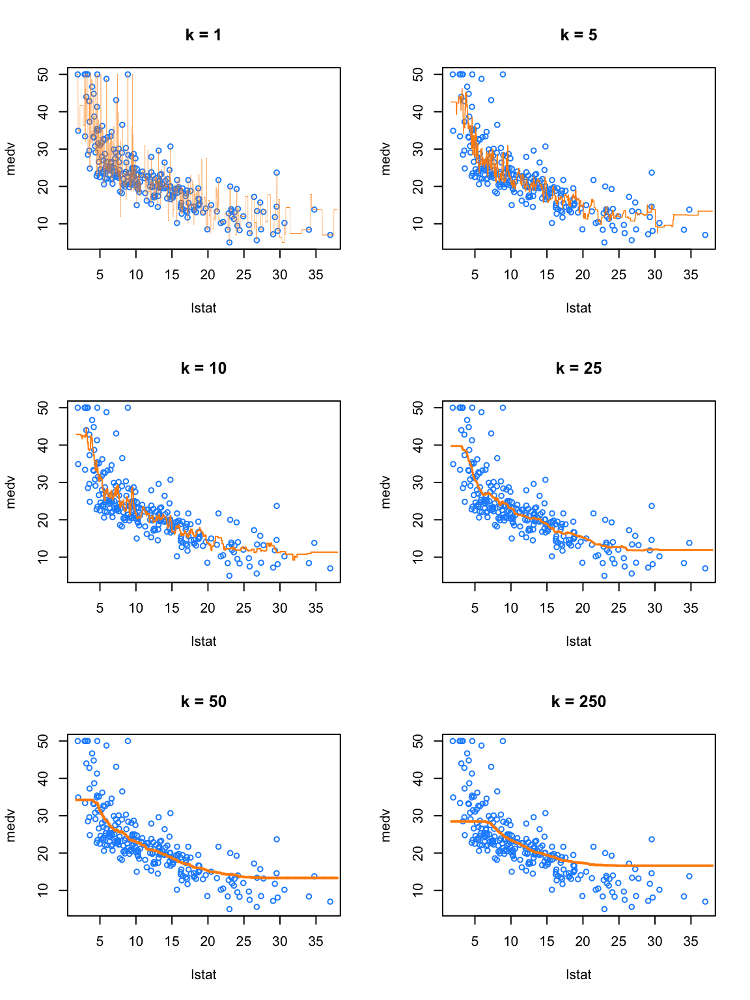
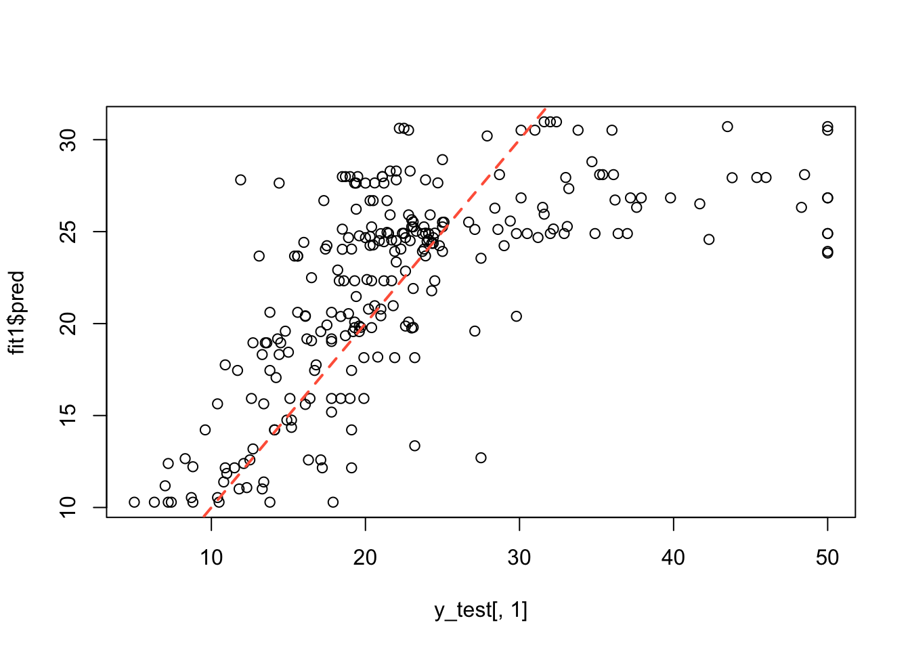
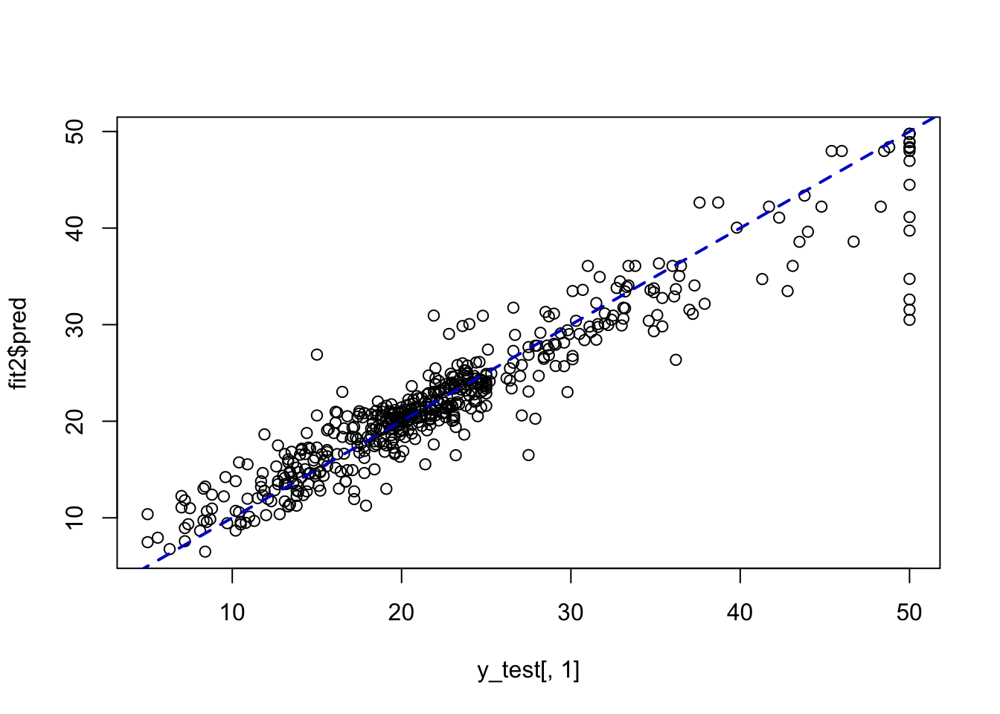

1 k-NN para regresión
El algoritmo k-Nearest Neighbors (k-NN) para regresión es una técnica no paramétrica que predice un valor numérico continuo. El algoritmo funciona bajo la siguiente lógica: Identifica las \(k\) observaciones más cercanas al punto que queremos predecir (usualmente mediante la distancia euclidiana). Calcula la predicción final como el promedio de los valores de la variable objetivo de esos \(k\) vecinos. En versiones más avanzadas, se puede dar más peso a los vecinos que están más cerca, de modo que influyan más en el resultado final que los que están relativamente lejos. Es un método intuitivo porque se basa en la premisa de que “casos similares tienden a tener resultados similares”.
Dado que k-NN calcula distancias (generalmente euclidianas), siempre se debe normalizar o estandarizar las variables predictoras antes de entrenar el modelo en R. Si una variable tiene una escala mucho mayor que otra (por ejemplo, ingresos vs. edad), dominará por completo el cálculo de la distancia y el modelo perderá precisión.
Paquete FNN
El paquete FNN (Fast Nearest Neighbors) de Beygelzimer et al. (2024) es uno de los paquetes más eficientes para esta tarea específica. A diferencia de otros que se centran solo en clasificación, FNN tiene una función dedicada exclusivamente a la regresión, knn.reg(). Es extremadamente rápido porque utiliza algoritmos de búsqueda optimizados (como cover trees).
La función para aplicar k-NN para regresión se muestra a continuación.
La función knn.reg del paquete FNN en R permite seleccionar entre tres algoritmos para la búsqueda de vecinos más cercanos: "brute", "kd_tree" y "cover_tree". A continuación se describe cada uno de ellos.
Método brute (fuerza bruta)
Este método calcula directamente la distancia entre cada punto de consulta y todos los puntos del conjunto de datos.
- Idea: comparar el punto de interés con todos los puntos disponibles.
- Procedimiento: se calculan todas las distancias y luego se seleccionan los \(k\) vecinos más cercanos.
- Complejidad: \(O(n)\) por consulta (más el costo de ordenar).
- Ventajas:
- Implementación simple.
- Resultados exactos.
- No depende de estructuras adicionales.
- Desventajas:
- Computacionalmente costoso para grandes volúmenes de datos.
- No escala eficientemente.
Método kd_tree (árbol k-dimensional)
El kd-tree es una estructura de datos que organiza los puntos en un árbol binario, particionando el espacio según las dimensiones.
- Idea: dividir recursivamente el espacio en regiones más pequeñas.
- Procedimiento: en cada nodo se selecciona una dimensión y se divide el conjunto de datos en dos subconjuntos.
- Complejidad:
- Construcción: \(O(n \log n)\)
- Consulta: aproximadamente \(O(\log n)\) en baja dimensión.
- Ventajas:
- Reduce significativamente el número de comparaciones.
- Eficiente en espacios de baja dimensión.
- Desventajas:
- Su rendimiento disminuye en espacios de alta dimensión.
- Sensible a la “maldición de la dimensionalidad”.
Método cover_tree
El cover tree es una estructura jerárquica diseñada para búsquedas eficientes de vecinos cercanos en espacios métricos.
- Idea: organizar los datos en múltiples niveles de cobertura usando subconjuntos anidados.
- Procedimiento: se construyen niveles donde cada uno representa una versión más “coarse” del conjunto de datos.
- Complejidad:
- Construcción: \(O(n \log n)\)
- Consulta: depende de la dimensión intrínseca de los datos.
- Ventajas:
- Más robusto que kd-tree en dimensiones moderadas o altas.
- Buen desempeño cuando los datos tienen estructura.
- Desventajas:
- Implementación más compleja.
- Puede tener constantes de tiempo elevadas en la práctica.
Recomendaciones prácticas
- Para conjuntos de datos pequeños o de alta dimensión: utilizar
brute. - Para conjuntos de datos grandes en baja dimensión: utilizar
kd_tree. - Para conjuntos de datos grandes con estructura compleja o dimensión moderada/alta: considerar
cover_tree.
Paquete tidymodels
El ecosistema moderno tidymodels (vía parsnip): si se desea un flujo de trabajo organizado y profesional, tidymodels es la opción recomendada. Permite cambiar de algoritmo fácilmente sin cambiar toda la estructura del código. Se suele usar el motor "kknn" dentro de la especificación del modelo. Facilita enormemente el proceso de tuning (encontrar el valor óptimo de \(k\)) y la validación cruzada.
Paquete caret
El paquete caret: durante años fue el estándar para Machine Learning en R. Aunque está siendo desplazado por tidymodels, sigue siendo muy robusto. Para entrenar se usa train(..., method = "knn"). Automatiza el preprocesamiento de los datos (como el escalado, que es crítico en k-NN) mediante el argumento preProcess = c("center", "scale").
Ejemplo 1 con el paquete FNN
En este ejemplo se busca aplicar k-NN para explicar la variable respuesta medv (valor medio de las viviendas ocupadas por sus propietarios 1000$) en función de la covariable lstat (porcentaje de la población clasificada como de “bajo estatus socioeconómico” en cada barrio), usando la base de datos Boston del paquete MASS de Ripley and Venables (2025).
El objetivo de este ejercicio es explorar el efecto de hiper-parámetro \(k\) en los resultados.
## crim zn indus chas nox rm age dis rad tax ptratio black lstat
## 1 0.00632 18 2.31 0 0.538 6.575 65.2 4.0900 1 296 15.3 396.90 4.98
## 2 0.02731 0 7.07 0 0.469 6.421 78.9 4.9671 2 242 17.8 396.90 9.14
## 3 0.02729 0 7.07 0 0.469 7.185 61.1 4.9671 2 242 17.8 392.83 4.03
## 4 0.03237 0 2.18 0 0.458 6.998 45.8 6.0622 3 222 18.7 394.63 2.94
## 5 0.06905 0 2.18 0 0.458 7.147 54.2 6.0622 3 222 18.7 396.90 5.33
## 6 0.02985 0 2.18 0 0.458 6.430 58.7 6.0622 3 222 18.7 394.12 5.21
## medv
## 1 24.0
## 2 21.6
## 3 34.7
## 4 33.4
## 5 36.2
## 6 28.7## [1] 506 14Vamos a crear los datos de entrenamiento y de prueba usando la mitad de los datos, ya que tenemos en total 506 observaciones o registros. Para esto vamos a crear un vector con índices para identificar los elementos de entrenamiento train_index.
set.seed(123)
train_index <- sample(1:nrow(Boston), size = 253)
train_data <- Boston[train_index, ]
test_data <- Boston[-train_index, ]Ahora vamos a crear la matriz \(\boldsymbol{X}\) y el vector \(\boldsymbol{Y}\) así:
X_train <- Boston["lstat"]
X_test <- Boston["lstat"]
y_train <- Boston["medv"]
y_test <- Boston["medv"]Como en este ejemplo tenemos una sola covariable \(X\), vamos a crear un objeto x_grid como una secuencia de valores de \(X\) para dibujar las predicciones \(\hat{Y}\) para cada uno de los valores de \(X\) que están en x_grid.
X_train_min <- min(X_train)
X_train_max <- max(X_train)
x_grid <- data.frame(lstat = seq(from=X_train_min, to=X_train_max, by = 0.01))
head(x_grid)## lstat
## 1 1.73
## 2 1.74
## 3 1.75
## 4 1.76
## 5 1.77
## 6 1.78## lstat
## 3620 37.92
## 3621 37.93
## 3622 37.94
## 3623 37.95
## 3624 37.96
## 3625 37.97A continuación vamos a aplicar la función knn.reg variando el valor de k. Adicionalmente, vamos a suministrar test = x_grid para obtener un vector con las predicciones para los valores almacenados en x_grid.
library(FNN)
pred_001 <- knn.reg(train = X_train, test = x_grid, y = y_train, k = 1)
pred_005 <- knn.reg(train = X_train, test = x_grid, y = y_train, k = 5)
pred_010 <- knn.reg(train = X_train, test = x_grid, y = y_train, k = 10)
pred_050 <- knn.reg(train = X_train, test = x_grid, y = y_train, k = 50)
pred_100 <- knn.reg(train = X_train, test = x_grid, y = y_train, k = 100)
pred_250 <- knn.reg(train = X_train, test = x_grid, y = y_train, k = 250)Ahora vamos a dibujar el diagrama de dispersión entre la variable respuesta y la covariable usando la información del conjunto de entrenamiento, diferenciando por cada valor de \(k\). Adicionalmente, vamos a agregar en color naranja un línea que representa el valor de \(\hat{Y}\) para cada uno de los valores de x_grid.

De la figura anterior podemos ver que k = 1 claramente presenta un sobreajuste (overfitting), ya que k = 1 es un modelo muy complejo y de alta variabilidad. Por el contrario, k = 250 claramente está subajustando (underfitting) los datos, puesto que k = 250 es un modelo muy simple y de baja varianza. De hecho, en este caso, está prediciendo un simple promedio de todos los datos en cada punto.
¿Cómo elegir el valor de \(k\) más apropiado?
De la figura anterior vimos que:
- para
kbajo: el modelo final es complejo y muy quebradizo. - para
kalto, el modelo final es poco flexible y muy suavizado
Lo que deseamos es un valor de \(K\) que genere un modelo que prediga bien pero sin que presente “overfitting”.
Se pueden usar varias medidas de desempeño en regresión pero en este ejemplo vamos a usar el RMSE y para eso vamos a crear nuestra propia función rmse:
Ahora vamos a crear una función que le ingrese un valor de \(K\), el conjunto de datos de entrenamiento y un conjunto de datos de prueba. La función va a retornar el RMSE para esa elección.
# define helper function for getting knn.reg predictions
# note: this function is highly specific to this situation and dataset
make_knn_pred = function(k = 1, training, predicting) {
pred = FNN::knn.reg(train = training["lstat"],
test = predicting["lstat"],
y = training$medv, k = k)$pred
act = predicting$medv
rmse(predicted = pred, actual = act)
}Definamos un vector con los posibles valores de \(k\):
Ahora aplicamos las funciones anteriores para los diferentes valores de \(k\).
# get requested train RMSEs
knn_trn_rmse = sapply(k, make_knn_pred,
training = train_data,
predicting = train_data)
# get requested test RMSEs
knn_tst_rmse = sapply(k, make_knn_pred,
training = train_data,
predicting = test_data)
# determine "best" k
best_k = k[which.min(knn_tst_rmse)]
# find overfitting, underfitting, and "best"" k
fit_status = ifelse(k < best_k, "Over", ifelse(k == best_k, "Best", "Under"))Los resultados los podemos resumir en la siguiente tabla:
# summarize results
knn_results = data.frame(
k,
round(knn_trn_rmse, 2),
round(knn_tst_rmse, 2),
fit_status
)
colnames(knn_results) = c("k", "Train RMSE", "Test RMSE", "Fit?")
# display results
knitr::kable(knn_results, escape = FALSE, booktabs = TRUE)| k | Train RMSE | Test RMSE | Fit? |
|---|---|---|---|
| 1 | 1.58 | 7.11 | Over |
| 5 | 4.60 | 5.88 | Over |
| 10 | 4.85 | 5.41 | Over |
| 25 | 5.02 | 5.36 | Best |
| 50 | 5.37 | 5.70 | Under |
| 250 | 8.92 | 9.29 | Under |
¿Cuál es el valor de \(k\) apropiado para minimizar el RSME?
Ejemplo 2 con el paquete FNN
En este ejemplo vamos a usar los mismos datos de las casas en Boston para predecir la variable medv en función de las variables lstat (porcentaje de la población de bajo estatus socioeconómico en el área), rm (número promedio de habitaciones por vivienda), dis (distancia ponderada a cinco centros de empleo en Boston), tax (tasa de impuesto a la propiedad por cada $10,000 del valor) y ptratio (elación alumno-profesor en cada localidad).
El objetivo de este ejemplo es mostrar que se deben scalar las covariables antes de entrenar el modelo.
library(MASS)
set.seed(123)
train_index <- sample(1:nrow(Boston), size = 250)
train_data <- Boston[train_index, ]
test_data <- Boston[-train_index, ]
X_train <- Boston[, c("lstat", "rm", "dis", "tax", "ptratio")]
X_test <- Boston[, c("lstat", "rm", "dis", "tax", "ptratio")]
y_train <- Boston["medv"]
y_test <- Boston["medv"]
head(X_train)## lstat rm dis tax ptratio
## 1 4.98 6.575 4.0900 296 15.3
## 2 9.14 6.421 4.9671 242 17.8
## 3 4.03 7.185 4.9671 242 17.8
## 4 2.94 6.998 6.0622 222 18.7
## 5 5.33 7.147 6.0622 222 18.7
## 6 5.21 6.430 6.0622 222 18.7Entrenamos el modelo y obtenemos las predicciones para X_train
Ahora vamos a mostrar los resultados gráficos, la correlación lineal de Pearson entre \(Y\) y \(\hat{Y}\) y el RSME.

## [1] 0.7775987rmse = function(actual, predicted) {
sqrt(mean((actual - predicted) ^ 2))
}
rmse(actual=y_test[, 1], predicted=fit1$pred)## [1] 5.863416Ahora vamos a volver a entrenar el modelo pero usando la función scale sobre las matrices que contienen las covariables.
## lstat rm dis tax ptratio
## 1 -1.0744990 0.4132629 0.140075 -0.6659492 -1.4575580
## 2 -0.4919525 0.1940824 0.556609 -0.9863534 -0.3027945
## 3 -1.2075324 1.2814456 0.556609 -0.9863534 -0.3027945
## 4 -1.3601708 1.0152978 1.076671 -1.1050216 0.1129203
## 5 -1.0254866 1.2273620 1.076671 -1.1050216 0.1129203
## 6 -1.0422909 0.2068916 1.076671 -1.1050216 0.1129203fit2 <- knn.reg(train = X_train, test = X_test, y = y_train, k = 5)
plot(x=y_test[, 1], y=fit2$pred)
abline(a=0, b=1, col="blue3", lty="dashed", lwd=2)
## [1] 0.9439849rmse = function(actual, predicted) {
sqrt(mean((actual - predicted) ^ 2))
}
rmse(actual=y_test[, 1], predicted=fit2$pred)## [1] 3.085159¿Qué se puede concluir en este ejemplo?
Ejemplo con el paquete tidymodels
Para este ejemplo vamos a usar tidymodels
https://parsnip.tidymodels.org/reference/nearest_neighbor.html
Nota: algunos de los ejemplos aquí mostrados son adaptaciones de https://daviddalpiaz.github.io/r4sl/knn-reg.html